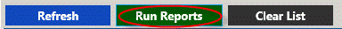
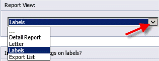
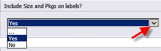
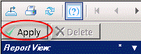
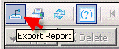
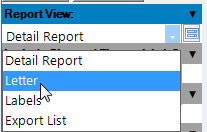
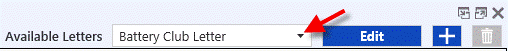
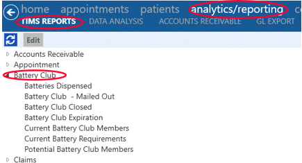

Complete Actions Reports

- Click on the Run Reports button for competed action reports.
- Detail report view will display patient battery club information.
- Letter view will generate a letter addressed to each patient on report. Logos imported into TIMS will be printed on HA Summary letters. Letters can be customized and archived for future use.
- Labels view will generate mailing labels for each patient on the report can include battery size and quantity. Labels will print on standard Avery 5160 3 x 10 labels.
- Export List view includes patient name, address, phone #, battery size email address. Use this view when exporting report to Excel.
Report Parameters
- The Report View can be selected to display detail report, letter, labels or export list.

- Battery size and number of packages to be processed can be included on the order with this parameter.

- The Site parameter can be used to choose which site information will be included on the report. This parameter is optional.
- The Sort By parameter is used to choose if the report information will be displayed by zip code or last name in the letter, labels and export list views. This is a required parameter.
- The Exclude Patients with Incomplete Addresses parameter is only relevant when the report view is letters or labels, but is still a required parameter.
- Click OK to generate the report.
- When a parameter choice is optional, if you do not choose anything for that parameter it will automatically include everything in the Available Values list.
- Click the Apply button to apply changes made from the parameter panel on the left of the report.

- The Apply button is only active when a change has been made to the parameter panel and is indicated as active with a green checkmark.
- The Delete button can be used delete a selected parameter in parameter panel.
- Click the Export report icon to export report to Excel or other formats.

Battery Club Letters
- Choose letter report view to generate a letter to all patients on list

- Choose the letter you want to use from the drop down list of saved letters.

- Click on the Edit button to edit an existing letter.
- Click on the
 icon to create a new letter.
icon to create a new letter.
Additional Battery Club Reports
- Additional Battery Club reports can be access from the TIMS Reports - Battery Club menu.

- See Battery Club Reports help for more information on individual reports